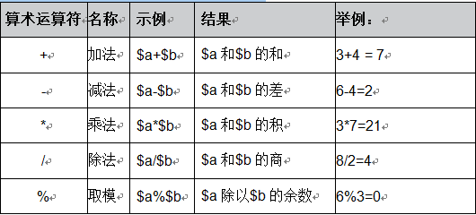

文件的格式
<?php
语句
？>
输出语句
echo ' ....';
变量的定义(php是弱类型)：
$name = "object";
常量的定义：
define("name",1,false);
bool define(string $constant_name, mixed $value[, $case_sensitive = true])
使用define函数，三个参数 ，第一个是 常量的名称，第二个是 常量的值，第三个为可选参数表示是否区分大小写。默认false；
常量的使用：
无需 $ 符号引用：
define("PI",3.14);
- echo "pi="+PI+"...";
- constant("PI"); constant方法引用常量，方法：
mixed constant(string constant_name)
常量是否已定义：
使用函数 defined 来检测是否已存在该常量：
bool defined(string constants_name)
函数的定义：
参数： mixed 表示可选参数
PHP 运算符：

PHP的赋值运算符有两种，分别是：
(1)“=”：把右边表达式的值赋给左边的运算数。它将右边表达式值复制一份，交给左边的运算数。换而言之，首先给左边的运算数申请了一块内存，然后把复制的值放到这个内存中。
(2)“&”：引用赋值，意味着两个变量都指向同一个数据。它将使两个变量共享一块内存，如果这个内存存储的数据变了，那么两个变量的值都会发生变化。
比较运算符主要是用于进行比较运算的，例如：等于、全等、不等、大于、小于。在PHP中常用的比较运算符如下表：

PHP支持 三目运算符：
<?php
$a = 78;//成绩
$b = $a>=60?"及格":"不及格";
echo $b;
?>
PHP 逻辑运算符主用是进行逻辑运算的，例如：逻辑与、逻辑或、逻辑异或、逻辑非等

* 需注意的是 php中的 &符号是类似于C++中的指针，指向内存地址 而java中的& 表示and
* 需注意 php 中的 xor 运算操作符 ，xor代表 有且只有一个。
<?php
$a = TRUE; //A同意
$b = TRUE; //B同意
$c = FALSE; //C反对
$d = FALSE; //D反对
//咱顺便复习下三元运算符
echo ($a and $b)? "通过":"不通过";
echo "<br />";
echo ($a or $c)? "通过":"不通过";
echo "<br />";
echo ($a xor $c xor $d)? "通过":"不通过";
echo "<br />";
echo (!$c)? "通过":"不通过";
echo "<br />";
echo ($a && $d)? "通过":"不通过";
echo "<br />";
echo ($b || $c || $d)? "通过":"不通过";
?>
PHP中的连接运算符：
*需注意 不是其他语言的 +号来连接 而是使用 .
例如 ：echo "aa=".$a;
echo "b = ".$b.'...';
PHP中提供了一个错误控制运算符“@”，对于一些可能会在运行过程中出错的表达式时，我们不希望出错的时候给客户显示错误信息，这样对用户不友好。于是，可以将@放置在一个PHP表达式之前，该表达式可能产生的任何错误信息都被忽略掉；
如果激活了track_error（这个玩意在php.ini中设置）特性，表达式所产生的任何错误信息都被存放在变量$php_errormsg中，此变量在每次出错时都会被覆盖，所以如果想用它的话必须尽早检查。
需要注意的是：错误控制前缀“@”不会屏蔽解析错误的信息，不能把它放在函数或类的定义之前，也不能用于条件结构例如if和foreach等。
列： echo "<br/> error on:".$php_errormsg; 在会出错的地方。写上
php 中 do-while 和while{}的区别:
dowhile是先执行do{} 再判断while里面的语句，而while循环会先判断while（）中的语句。
$num = 2;
$sum = 10;
while($num>3){
$sum = $sum + 10;
}
echo "A例子的结果：".$sum."<br />";
//B例子
$num = 2;
$sum = 10;
do{
$sum = $sum + 10;
}while($num>3);
echo "B例子的结果：".$sum."<br />";
A例子的结果为10，B例子的结果为20，A例子一次也没执行，B例子执行了一次。
PHP中 类似于 for -in语句：
foreach（）{
}
列：foreach($students as $v){
echo "<br />";
echo $v;//输出（打印）姓名
}